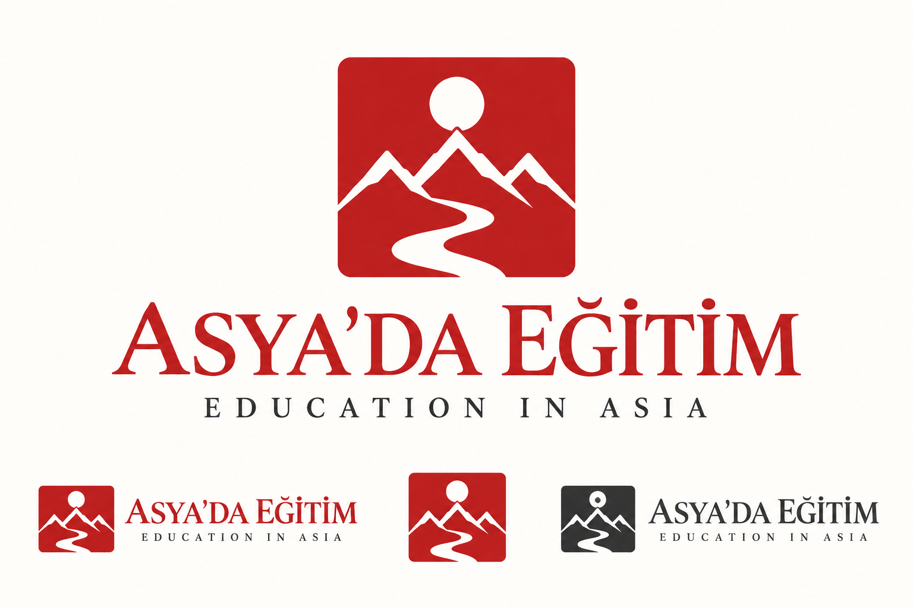
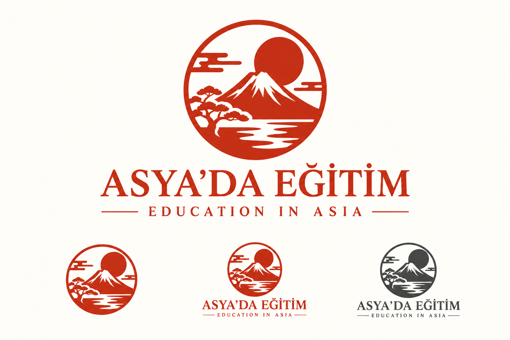
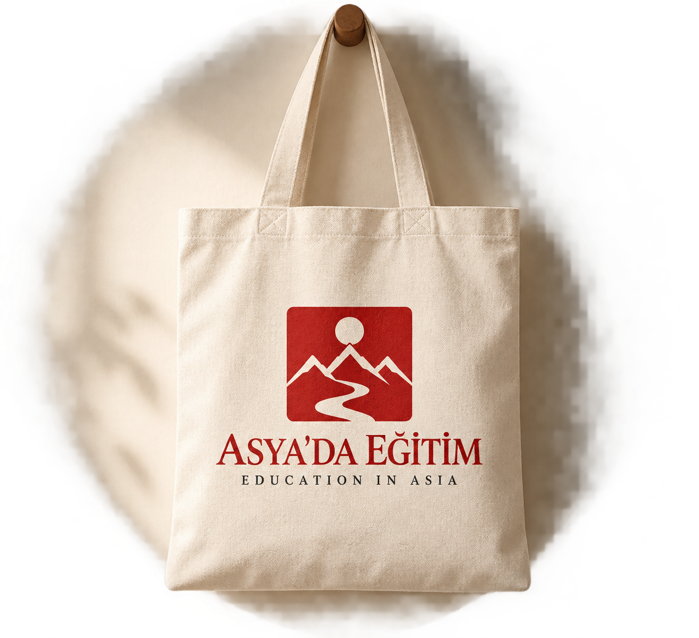
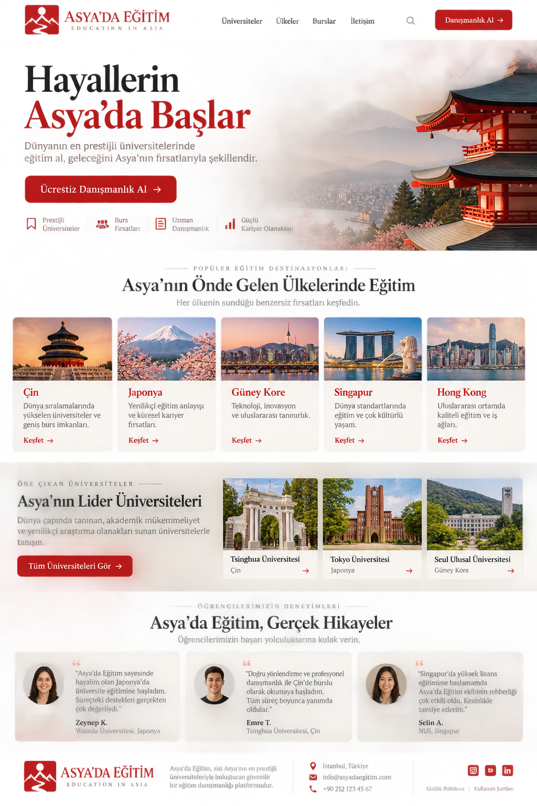
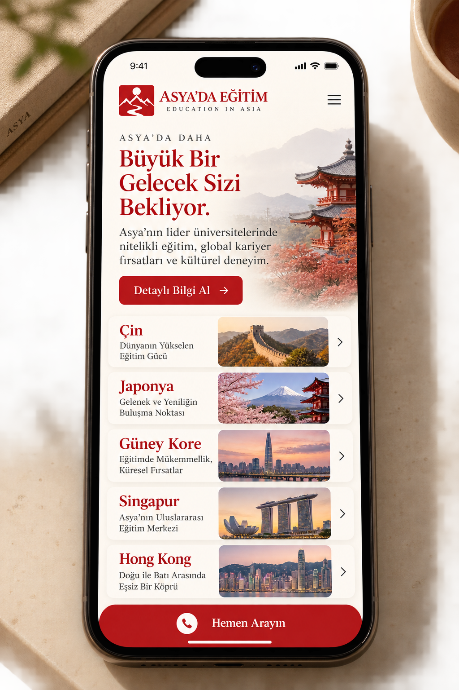

ASYA'DA EĞİTİM · MÜHÜR LOGO ÇEŞİTLEMELERİ · SEÇİM BEKLENİYOR
Mühür — 10 çeşit
Aynı mühür fikri, 10 imza + 10 tipografi. Başlıklara tıklayarak açıp kapat.
V-01–V-04 Klasik diziler — üç zirve · tek zirve+hilal · yuvarlak mühür · dikey mühür
V-01 · Üç zirve + güneş (serif)


V-02 · Tek zirve + hilal (grotesk)

V-03 · Yuvarlak mühür + patika (slab)

V-04 · Dikey mühür + katmanlı sırtlar (grotesk caps)

V-05–V-07 Felsefi diziler — Fuji-çam · iki çizgi · çift çerçeve
V-05 · Yuvarlak mühür + Fuji-çam (klasik serif)


V-06 · İki çizgi + boşluk (hafif serif)

V-07 · Çift çerçeve + nehir (transitional)

V-08–V-10 Modern diziler — yatay mühür · eskitme · tek çizgi
V-08 · Yatay mühür + ufuk güneşi (sans)

V-09 · Ağır eskitme + masif zirveler (slab)

V-10 · Tek çizgi + nokta güneş (hafif grotesk)

10 UYGULAMA V-01 Uygulama Seti — aynı mühür, her yüzeyde
Defter

Kartvizit

Antetli kâğıt

Roll-up

Ofis tabelası

Sosyal medya postu

Billboard

Bez çanta


Sertifika

Hikâye (story)

3 WEB V-01 Web Sitesi — ana sayfa · üniversiteler · mobil
Ana sayfa (navigasyon + 5 ülke + yorumlar)


Üniversite dizini (filtre + arama + kartlar)

Mobil ana sayfa (5 ülke + sticky CTA)

